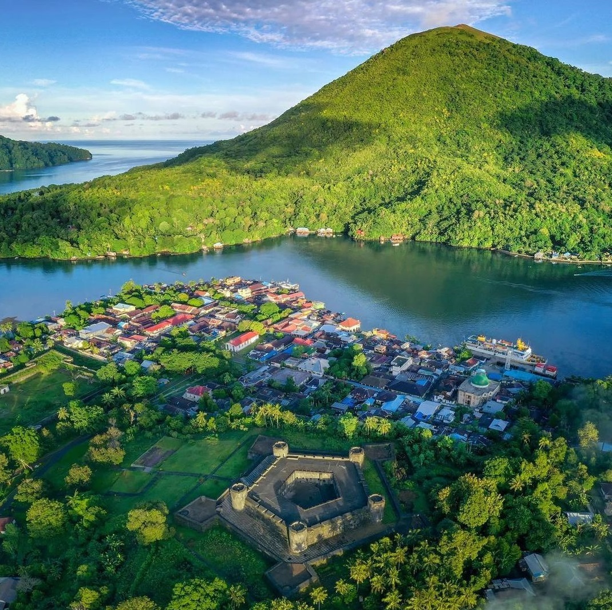
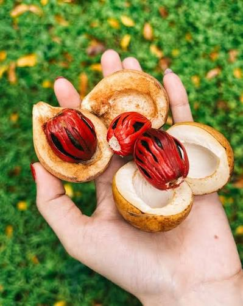
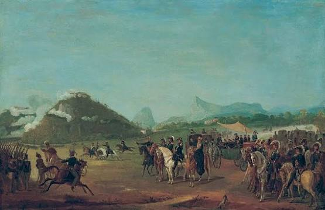
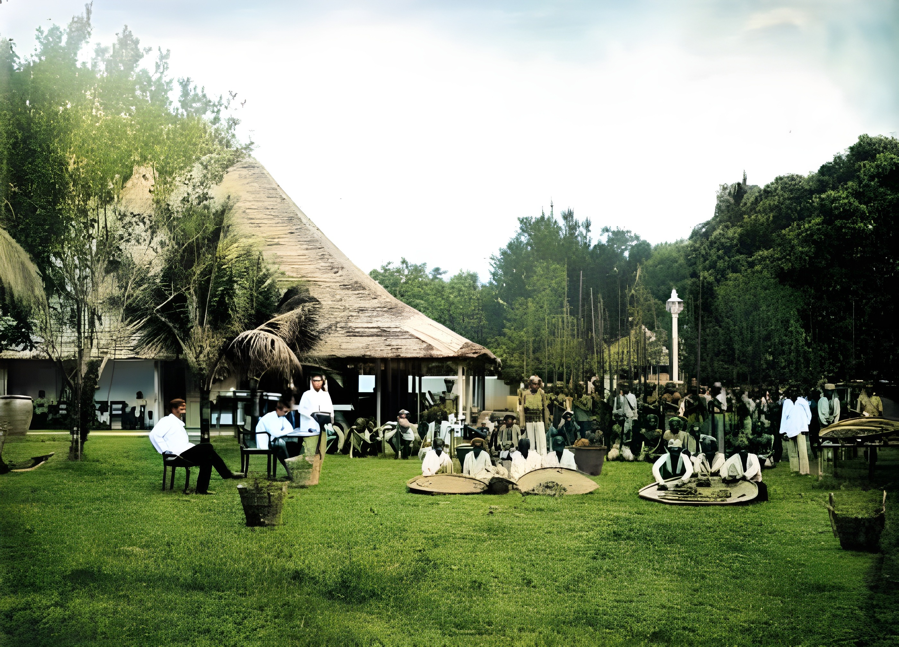
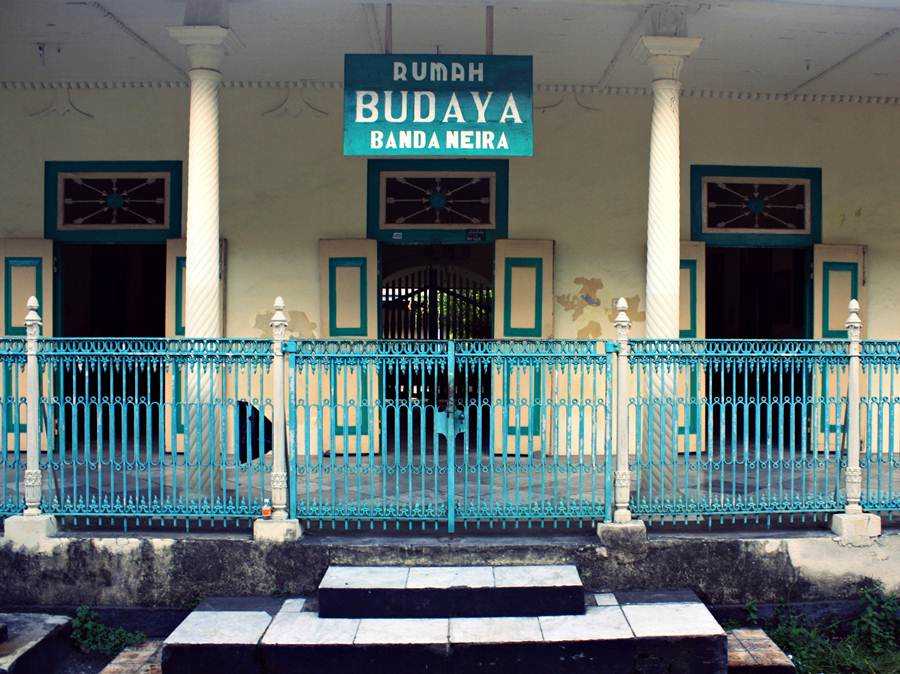
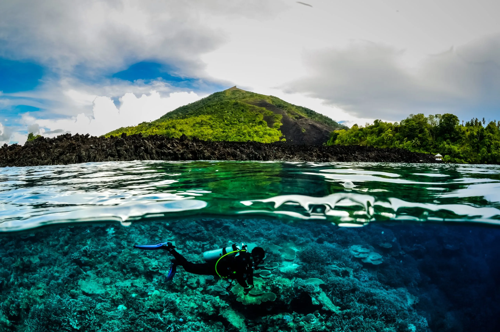
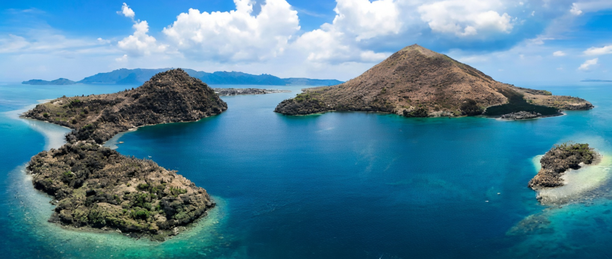

THE ISLAND
A Paradise Shaped by Spice and Power
Kepulauan Banda adalah gugusan pulau vulkanik di Maluku, di tengah Laut Banda. Salah satu pulaunya adalah Banda Neira, tempat pusat permukiman utama Kepulauan Banda berada. Secara geografis, wilayah ini kecil dan terpencil. Namun selama berabad-abad, Banda memiliki sesuatu yang membuatnya terhubung dengan jaringan perdagangan yang sangat luas: pala dan fuli.
Jauh sebelum bangsa Eropa datang, masyarakat Banda sudah aktif sebagai pelaut dan pedagang. Mereka tidak hidup dalam isolasi. Pala diperdagangkan dengan berbagai pedagang dari luar wilayah, termasuk pedagang dari Jawa, India, Arab, dan Tiongkok. Hubungan dagang tersebut sudah berlangsung sebelum VOC berdiri.
Yang membuat Banda berbeda adalah tanaman pala atau Myristica fragrans. Tanaman ini merupakan tanaman asli Kepulauan Banda. Dari satu buah pala terdapat dua komoditas utama: biji pala dan fuli, yaitu lapisan merah yang membungkus bijinya.
Pada masa perdagangan rempah, Banda menjadi sumber yang sangat penting karena pala dan fuli yang sangat dicari dunia berasal dari kepulauan ini.
Banda memang sudah menjadi pusat perdagangan sebelum VOC muncul.

THE ARRIVAL
When Foreign Powers Came to Banda
Ketika nilai rempah semakin tinggi, bangsa-bangsa Eropa mulai berlomba mencapai sumber rempah di Asia.
Portugis datang lebih dahulu ke kawasan Maluku. Kemudian Inggris dan Belanda ikut membangun jaringan perdagangan di Nusantara.
Banda menjadi salah satu wilayah yang sangat mereka incar karena pala dan fuli merupakan komoditas bernilai tinggi.
Masyarakat Banda sudah memiliki jaringan perdagangan sendiri. Inggris ingin mendapatkan akses perdagangan. Belanda juga ingin mendapatkan akses perdagangan. Dan perlahan, persaingan antarpedagang Eropa ikut masuk ke dalam perdagangan Banda.
Pada awal abad ke-17, VOC atau Vereenigde Oostindische Compagnie mulai memperkuat posisinya di Banda.
VOC bukan sekadar perusahaan dagang biasa. VOC memiliki kekuatan ekonomi, armada, tentara, dan kemampuan untuk membuat perjanjian serta membangun benteng.
Jadi ketika VOC datang, masyarakat Banda tidak hanya berhadapan dengan pedagang.
Mereka berhadapan dengan perusahaan dagang yang memiliki kekuatan militer.

THE DARK CHAPTER
When Trade Became Power
Tujuan VOC semakin jelas:
monopoli pala.
Monopoli berarti VOC ingin menjadi pihak yang mengendalikan perdagangan pala sehingga masyarakat Banda tidak lagi bebas menjual pala kepada pedagang lain.
Pada 1609, VOC membangun sebuah benteng di Banda secara sepihak. Konflik kemudian terjadi dan VOC terus memperkuat posisi militernya.
Salah satunya adalah Benteng Belgica, yang dibangun pada 1611. Benteng ini menjadi bagian dari usaha VOC menghadapi perlawanan penduduk yang menolak monopoli perdagangan pala.
Namun benteng saja belum cukup. VOC masih belum benar-benar menguasai seluruh perdagangan pala.
Jadi pada 1621, VOC belum menang.
Dan di sinilah cerita berubah menjadi jauh lebih brutal.
Pada akhir Februari 1621, Gubernur Jenderal VOC Jan Pieterszoon Coen datang ke Banda dengan kekuatan besar.
15 kapal. 1.655 orang.
Tujuannya adalah mengakhiri perlawanan masyarakat Banda dan memaksakan monopoli pala. Negosiasi gagal dan serangan kemudian berlangsung.
Permukiman masyarakat Banda diserang. Penduduk ditangkap dan dibunuh. Para pemimpin masyarakat Banda ditangkap dan sebagian kemudian dihukum mati.
Setelah wilayah Banda dikuasai, sebagian penduduk melarikan diri, sebagian meninggal, dan sebagian lainnya dibawa keluar dari Banda dan diperbudak.
Nationaal Archief mencatat bahwa sekitar 14.000 penduduk Banda tewas, sementara sekitar 1.000 lainnya melarikan diri atau dibawa ke Batavia sebagai budak.



THE AFTERMATH
A New Banda
Setelah penaklukan 1621, VOC mengambil alih sistem produksi pala.
Tujuannya sekarang bukan lagi sekadar mendapatkan pala.
VOC ingin mengontrol dari pohonnya sampai perdagangannya.
Kebun-kebun pala kemudian dibagi menjadi lahan-lahan perkebunan yang disebut perken.
Lahan tersebut dikelola oleh orang-orang yang disebut perkenier. Mereka diwajibkan menyerahkan hasil pala kepada VOC dengan aturan harga yang telah ditentukan.
Penduduk Banda telah berkurang secara drastis. Karena itu, VOC mendatangkan ribuan orang yang diperbudak untuk bekerja di perkebunan pala.
Dengan demikian, sistem perkebunan Banda berubah total.
Sebelumnya: masyarakat Banda → menguasai kebun → berdagang dengan banyak pihak
Setelah: VOC → menguasai perkebunan → mengatur produksi → mengatur perdagangan

EXPLORE
Places and Things to Experience
Explore the historical places, spice culture, and natural beauty of Banda Neira.
BENTENG BELGICA
Benteng yang dibangun VOC pada 1611 dan menjadi salah satu peninggalan utama dari usaha Belanda menguasai Banda.

RUMAH BUDAYA BANDA NEIRA
Tempat untuk melihat berbagai koleksi yang berkaitan dengan sejarah kolonial Banda, termasuk lukisan, furnitur, meriam, dan artefak lainnya.

EXPLORE THE SEA
Nikmati keindahan Laut Banda, pulau-pulau vulkanik, snorkeling, diving, dan pemandangan alam di sekitar Banda Neira.

SEE BANDA NEIRA
A short visual introduction to Banda Neira.
VISIT
Before You Go
Banda Neira berada di Kepulauan Banda, Maluku, di tengah Laut Banda. Pulau ini dapat menjadi tujuan bagi pengunjung yang ingin melihat peninggalan sejarah, perkebunan pala, serta keindahan laut dan pulau-pulau vulkanik di sekitarnya.
Perjalanan ke Banda Neira membutuhkan perencanaan karena lokasinya berada di wilayah kepulauan yang cukup terpencil.

BANDA NEIRA
Location: Kepulauan Banda, Maluku, Indonesia
Region: Laut Banda
Known for: Pala, sejarah perdagangan rempah, benteng kolonial, dan wisata bahari
| Information | Details |
|---|---|
| Location | Kepulauan Banda, Maluku |
| Main Island | Banda Neira |
| Known For | Pala dan fuli |
| Historical Sites | Benteng Belgica, Rumah Budaya, Gereja Tua |
| Landscape | Pulau vulkanik dan Laut Banda |
PLAN YOUR VISIT
Tell us what interests you most about Banda Neira.